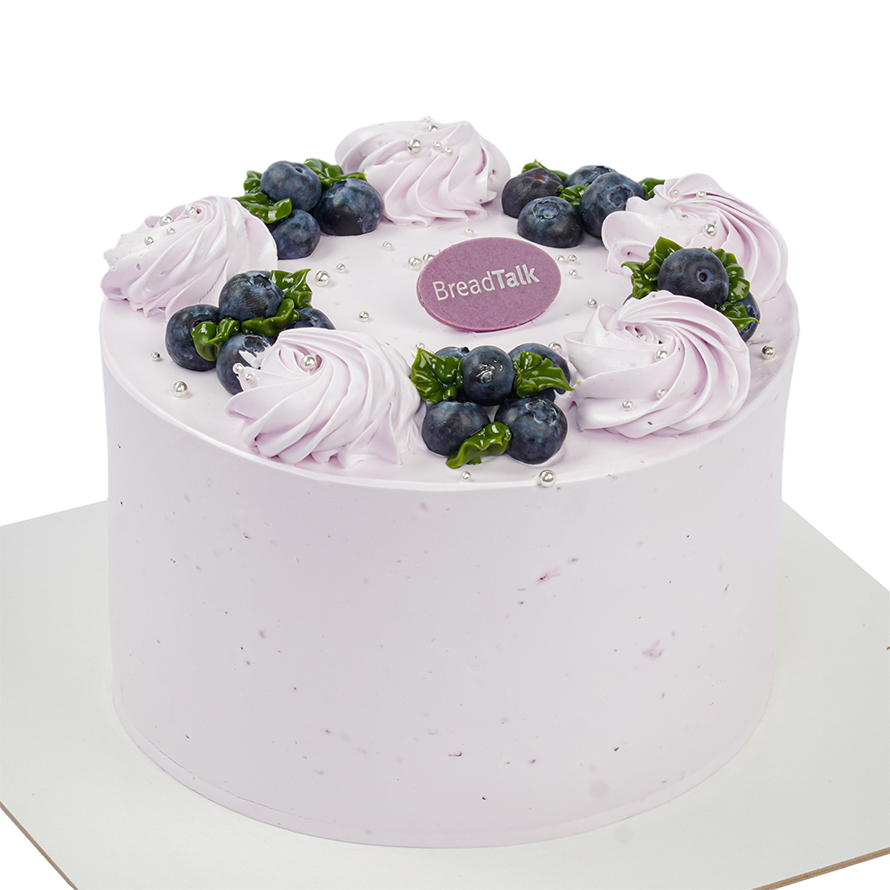
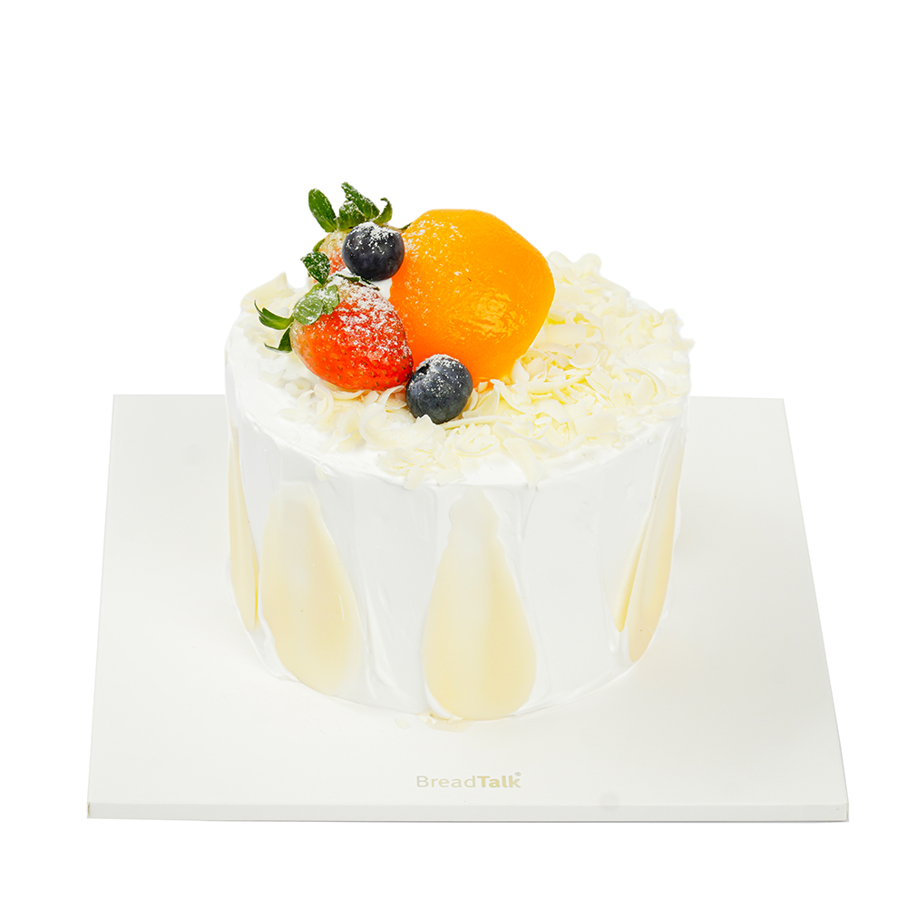
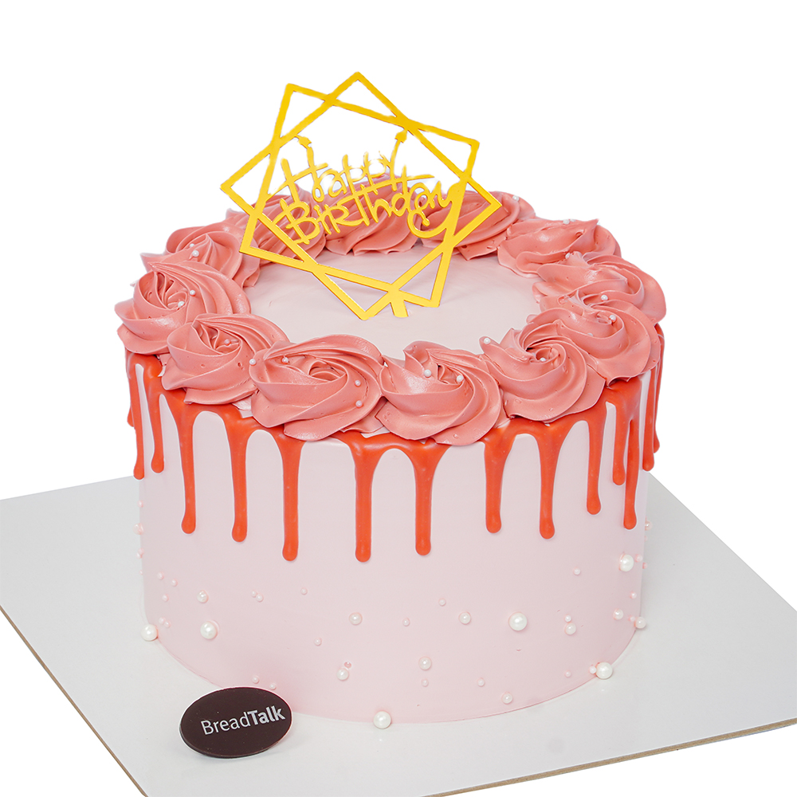

Bánh kem là món đặc biệt không thể thiếu trong mỗi dịp sinh nhật, đám cưới, thôi nôi… và được rất nhiều người yêu thích. Thế nhưng chúng ta thường không biết cách bảo quản bánh kem khi không có tủ lạnh nên khiến chúng nhanh bị hư hoặc không để được lâu ngay cả bảo quản bằng tủ lạnh nhưng không đúng cách.
Bài viết này sẽ chia sẻ những tuyệt chiêu hay ho nhất để bạn dễ dàng bảo quản bánh kem bằng tủ lạnh hoặc ngay cả khi không có tủ lạnh tốt nhất. Bạn chỉ cần lưu lại để áp dụng thôi và sẽ không cần phải hỏi bánh kem để ngăn đá được không hay bánh kem sinh nhật bảo quản được bao lâu… Cùng Liceria Bakery xem ngay để biết đó là những cách thú vị nào nhé!
Bánh kem khi để trong nhiệt độ thường lâu rất dễ bị chảy và biến dạng. Do đó người ta thường bảo quản chúng bằng tủ lạnh. Đây cũng là cách dễ và phổ biến nhất mà nhiều người hay áp dụng. Nếu để trong môi trường với nhiệt độ thông thường, bánh kem chỉ đảm bảo ngon nhất và giữ được hương vị chuẩn nhất trong vòng từ 2- 5 tiếng. Nhưng nếu bảo quản ở nhiệt độ ngăn mát của tủ lạnh, bánh kem có thể để được khoảng 2-3 ngày song vẫn sẽ bị khô hơn và không giữ được độ mềm mịn như ban đầu.
Tuy nhiên, khi bảo quản bánh kem trong tủ lạnh, bạn cần đảm bảo được các yếu tố sau:
Mặc dù bảo quản bánh kem bằng tủ lạnh là cách đơn giản nhất nhưng bạn vẫn có thể để bánh kem được lâu hơn ở nhiệt độ thường nếu áp dụng đúng cách.
Rất nhiều người lẫn lộn giữa việc bảo quản bánh kem và bánh mì. Với bánh mì, nếu muốn giữ cho lớp vỏ bánh được giòn và thơm trong nhiều ngày, bạn nên ủ bánh nóng ngay sau khi vừa ra lò. Còn với các dòng bánh ngọt hay bánh kem thì thì hoàn toàn ngược lại.
Để bảo quản bánh kem trong nhiệt độ thường không có tủ lạnh, bạn cắt miếng bánh mì sandwich hoặc bánh bông lan, bánh mì thông thường, ép dẹt lại rồi chèn chúng vào phần miếng bánh kem đã cắt dở. Tác dụng của việc này là ngăn cản sự ảnh hưởng trực tiếp của vi khuẩn lên cấu trúc bánh. Sau đó cẩn thận bọc kín lại bằng túi nilon hoặc màng bọc thực phẩm.
Bọc bánh kem trong hộp hoặc sử dụng túi bóng, màng bọc thực phẩm để bọc bánh lại thật kín, không để bất cứ khe hở nào vì chỉ cần một chút không khí từ bên ngoài xâm nhập vào thôi cũng đủ để có thể khiến bánh nhanh hỏng hơn.
Khi bánh mới ra lò, bạn nên để bánh nguội hẳn rồi mới lấy túi nilon bọc chúng lại thật kín, để ở nơi thoáng khí và mát mẻ, có nhiệt độ thấp thì sẽ bảo quản bánh được lâu hơn.
Trên đây là những cách bảo quản bánh kem bằng tủ lạnh và cả khi không có tủ lạnh khá đơn giản nhưng cũng rất hiệu quả mà bạn có thể áp dụng. Hy vọng bài viết đã mang đến cho bạn những thông tin thú vị, hữu ích.